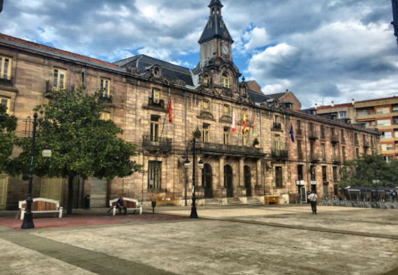

<table border="5" width="900" height="500">
		<tr>
			<td colspan="2" bgcolor="yellow">
			<h1> <center> TORRELAVEGA </center> </h1>
			</td>
		</tr>
		<tr>
			<td background="Escudo.PNG" width="200" height="400"> <center> Enlaces </br>  
			
			<a href="Torrelavega.html"> Capital del Besaya </a> <br/>
			<a href="ViaVerde.html"> Via Verde </a> <br/>
			<a href="LaLechera.html"> La Lechera </a> <br/>
			<a href="Sniace.html"> Sniace </a> <br/>
			</center>
			
			</td>
			
			<td width="650" height="450" bgcolor="blue"> <center> Torrelavega es un municipio y ciudad del norte de España. </center> </td>
		</tr>
</table>